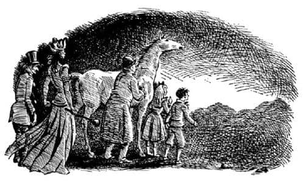

Direğin Önündeki Kavga
“Ooo! İmparatoriçe ha! Göreceğiz bakalım” dedi birisi. Sonra başka bir ses, “Colney Hatch* İmparatoriçesi şerefine üç defa hurra” dedi ve kalabalık buna katıldı. Cadı’nın yüzü aydınlandı ve başını hafifçe eğerek kalabalığı selamladı. Fakat “hurra”lar gülüşmelere dönüşünce Cadı onların kendisiyle sadece dalga geçtiğini anladı. Yüzünün ifadesi değişti, bıçağı sol eline aldı. Sonra hiç beklenmedik korkunç bir şey yaptı. Sanki sıradan bir şeymiş gibi, sağ eliyle uzanarak sokak lambasının direğinin yan demir çubuklarından birini kolayca kopardı. Büyü gücünün bir kısmını yitirdiyse de, kuvvetini yitirmemişti; demir çubukları sanki bir şekerleme çubuğuymuş gibi kırabiliyordu. Yeni silahını havaya attı, yeniden yakaladı, etrafında salladı ve atını ileri sürdü.
“İşte fırsat” diye düşündü Digory. At ile parmaklıkların arasına atıldı ve ilerlemeye başladı. Eğer hayvan bir an sakin durabilirse, Cadı’nın ayak bileğini yakalayabilirdi. Hızla giderken, tiksinti veren bir çatırtı ve düşme sesi duydu. Cadı demir çubuğu polis şefinin başına indirmişti: Adam gülle gibi yere düştü.
“Çabuk Digory, onu durdurmamız gerek” dedi yanındaki bir ses. Yatağından kalkmasına izin verilir verilmez aşağı koşan Polly idi bu.
“Çok harika birisin” dedi Digory. “Bana sıkıca tutun. Yüzüğe senin dokunman gerekecek. Sarı yüzük, aklında olsun. Ve ben söyleyene kadar da takma.”
İkinci bir çatırtı ve bir başka polis memuru daha yere yığıldı. Kalabalıktan öfkeli bağrışmalar duyuldu: “İndirin şunu aşağı. Birkaç kaldırım taşı getirin. Askerleri çağırın.” Fakat çoğunluk kaçmaya çabalıyordu. Bununla birlikte, nazik olduğu kadar da cesur olan Arabacı, demir çubuktan sakınmak için bir o yana bir bu yana kaçıyor ve hâlâ Çilek’in başını tutmaya çalışarak atının yanından ayrılmıyordu.
Kalabalık nefretle yuhalıyor ve bağırıyordu. Digory’nin başı üzerinden bir taş vınlayıp geçti. Ve sonra Cadı’nın sesi duyuldu. Büyük bir çanın sesi kadar duruydu ve Cadı’nın neredeyse mutlu olduğunu açığa vuruyordu.
“Alçaklar! Sizin dünyanızı fethettiğim zaman bunun hesabını pahalıya ödeyeceksiniz. Şehrinizde bir taş bile kalmayacak. Burayı Charn’a, Felinda’ya, Sorlis’e, Bramandin’e benzeteceğim.”
Sonunda Digory, Cadı’nın ayak bileğini yakaladı. Topuğuyla geriye doğru attığı tekme Digory’nin ağzına çarptı. Dudağı yaralanmıştı ve ağzı kanla doldu. Çok yakında bir yerden Andrew Dayı’nın sesi, titrek bir çığlık gibi geliyordu. “Madam, – sevgili genç bayan – Allah aşkına – kendinize geliniz.” Digory ikinci kez topuğunu yakaladı ama Cadı yine kurtuldu. Birçok insan daha, demir çubukla yere yıkıldı. Üçüncü kez yakaladığında, Cadı’ya Azrail gibi yapışmıştı ve Polly’ye bağırdı: “Haydi!” Ve – Tanrıya şükürler olsun! Kızgın ve korku dolu yüzler kayboldu, öfkeli ve korkulu sesler kesildi; Andrew Dayı’nınki dışında çıt yoktu. Karanlıkta, Digory’nin yanı başında feryat ediyordu. “Of, of, bu çılgınlık da ne? Sonum mu geldi acaba? Dayanamayacağım. Bu adil değil. Hiçbir zaman büyücü olmak istememiştim. Hepsi bir yanlış anlamadan ibaret. Hepsi vaftiz annemin hatası; bunu lanetlemem gerekiyor. Sağlığım açısından da doğru olan bu. Çok köklü bir Dorsetshire ailesi.”
“Eyvah!” diye düşündü Digory. “Onu beraberimizde getirmek istememiştik ki. Al başına belayı. Polly orada mısın?”
“Evet, buradayım. İteleyip durmasana..”
“Ben itelemiyorum” diye lafa başlamıştı Digory, fakat başka bir şey söylemesine fırsat kalmadan önce başları ormanın ılık, yeşil ışığına çıktı. Göletten dışarı çıkarlarken Polly bağırdı:
“Bak! Yaşlı atı da beraberimizde getirmişiz. Ve Bay Ketterley’yi. Ve Arabacı’yı. Hapı yuttuk.”
Bir kez daha ormanda olduğunu görür görmez, Cadı’nın rengi soldu ve yüzü atın yelesine değene kadar eğildi. Kendini ölecek bir hasta gibi hissettiğini görebiliyordunuz. Andrew Dayı titriyordu. Fakat at, Çilek, başını salladı, neşeyle kişnedi ve memnun gibi göründü. Digory onu ilk kez sakin görüyordu. Başının üzerinde yatık duran kulakları normal hale dönmüş ve gözlerindeki ateş sönmüştü.
“Haklısın, yaşlı ihtiyar” dedi Arabacı, Çilek’in başını okşayarak. “Böylesi daha iyi. Sakin ol.”
Çilek, dünyada yapılabilecek en doğal şeyi yaptı; çok susamış olduğundan (ona ne şüphe) ağır ağır en yakın gölete yürüdü ve su içebilmek amacıyla içine girdi. Digory hâlâ Cadı’nın topuğunu ve Polly de Digory’nin elini tutuyordu. Arabacı bir eliyle Çilek’e dokunmaktaydı. Andrew Dayı hâlâ bitkin olduğu için az önce Arabacı’nın öbür elini tutmuştu.
“Çabuk” dedi Polly, Digory’ye bakarak, “Yeşiller!”
Böylece, at suyunu içemedi. Onun yerine kendilerini karanlığa gömülürken buldular. Çilek kişniyordu, Andrew Dayı sızlanıyordu. Digory “Şansımız varmış” dedi.
Kısa bir sessizlik oldu. Sonra Polly “Oraya varmış olmamız gerekmiyor mu?” dedi.
“Bir yerlere gelmiş gibiyiz” dedi Digory. “En azından ben sert bir zeminde duruyorum.”
“Ya, şimdi anlıyorum ki ben de” dedi Polly. “Fakat neden bu kadar karanlık? Yanlış gölete mi girdik dersin?”
“Belki burası Charn’dır” dedi Digory. “Biz gece yarısı gelmiş olabiliriz.”
“Burası Charn değil” dedi Cadı, “burası boş bir dünya. Burası Hiçbir Şey.”
Ve gerçekten orası, olağanüstü bir şekilde Hiçbir Şey gibiydi. Hiç yıldız yoktu. O kadar karanlıktı ki birbirlerini göremiyorlardı. Gözlerinizi kapasanız da açsanız da bir fark yoktu. Ayaklarının altında toprak olması muhtemel, ama kesinlikle çim ya da ahşap olmayan, soğuk, düz bir şey vardı. Hava kuru ve soğuktu ve hiç rüzgâr yoktu.
“Kıyamet günüm geldi” dedi Cadı, soğuk sakin bir sesle.
“Of, böyle konuşma” diye mırıldandı Andrew Dayı. “Sevgili genç bayen, lütfen böyle şeyler söylemeyin. Her şey o kadar kötü olamaz. Ee – Arabacı – yanında bir şişe içki yoktur sanırım? Tüm ihtiyacım olan şey bir yudum içki.”
“Şimdi zamanı değil” dedi Arabacı güzel ve güvenli sesiyle. “Kimse soğukkanlılığını kaybetmesin. Demek istediğim şu: Kimsenin kemikleri kırıldı mı? Hayır. İşte buna şükretmeliyiz. Karanlıkta o kadar düştükten sonra herkesin beklediğinden çok daha iyi bir durumdayız. Şimdi, çukurlardan birine düştüysek – belki yeni bir metro istasyonudur – birazdan biri gelip bizi çıkarır buradan. Ve eğer öldüysek – ki bu olasılığı reddetmiyorum – eh, denizlerde daha kötü şeylerin olabileceğini ve insanların bazen ölmesi gerektiğini hatırlamalısınız. İnsan günah işlemediyse korkacak hiçbir şey yoktur. Ve bana sorarsanız, zaman geçirmek için yapabileceğimiz en iyi şey bir ilahi söylemektir.”
Ve ardından ilahi söylemeye başladı. Ürünlerin “güvenle toplandığından” söz eden bir hasat şükranı ilahisiydi bu. Zamanın başlangıcından bu yana sanki hiçbir şey yeşerip boy atmamış gibi görünen burası için pek de uygun değildi ama en iyi hatırladığı ilahi oydu. Sesi çok güzeldi ve çocuklar da ona katıldılar; çok neşeliydi. Andrew Dayı ve Cadı onlara katılmamıştı.
İlahinin sonuna doğru Digory birinin kolunu çektiğini hissetti; puro, sigara ve iyi giysilerin o bildik kokusundan bunun Andrew Dayı olduğuna karar verdi. Andrew Dayı onu, sezdirmeden diğerlerinden uzaklaştırıyordu. Biraz uzaklaşınca, yaşlı adam ağzını Digory’nin kulağına o kadar yaklaştırdı ki Digory gıdıklandı ve Andrew Dayı fısıldadı:
“Oğlum, şimdi tak şu yüzüğü de gidelim.”
Fakat Cadı’nın kulakları çok keskindi. “Aptal” dedi ve atından indi. “İnsanların düşüncelerini okuyabildiğimi ne çabuk unuttun? Bırak çocuğu! Hainliğe teşebbüs edersen şimdiye kadar hiçbir dünyada görülmedik bir intikam alırım senden.”
“Ayrıca” dedi Digory, “Polly’yi – ve Arabacı’yı – ve atı – böyle bir yerde bırakıp gidecek kadar adi bir domuz olduğumu düşünüyorsan yanılıyorsun.”
“Sen çok ahlaksız ve küstah bir küçük çocuksun” dedi Andrew Dayı.
“Şşşşşş” dedi Arabacı. Hepsi kulak kesildiler.
Karanlıkta bir şeyler olmaya başlamıştı sonunda. Çok uzaklardan müzikli bir ses geliyordu. Bazen aynı anda her yönden, bazen de yerin derinliklerinden geliyor gibiydi. Belki de toprağın sesiydi; Digory karar veremiyordu. Sözlü değildi; zorlukla işitilen bir melodisi vardı. Fakat, her şeyin ötesinde, duyduğu en güzel sesti. O kadar güzeldi ki güçlükle dayanabiliyordu. At da beğenmiş görünüyordu; yıllarca çeki atı olduktan sonra, kendini bir tay gibi hissettiği o eski yerde bulmuş; hatırladığı ve sevdiği birinin karşıdan bir avuç şekerle geldiğini görmüş gibi kişnemişti.
“Tanrım!” dedi Arabacı. “Ne güzel değil mi?”
Sonra aynı anda iki olağanüstü şey birden oldu. Birincisi, sese, daha birçok sesin; sayabileceğimizden çok daha fazla sesin, katılmasıydı. İlk ses ile harmoni içinde; fakat yüksek oktavdan, soğuk, hüzünlü, gümüşi seslerdi bunlar. İkinci olağanüstü şey ise; karanlık gökyüzünün aniden pırıl pırıl yıldızlarla dolmasıydı. Yaz akşamlarında olduğu gibi, öyle birer birer de çıkmadılar. Ortalık zifiri karanlıkken, bir anda binlerce, ama binlerce ışık noktacıkları sıçradı gökyüzüne – yıldızlar, güneş sistemleri ve gezegenler, bizim dünyamızdan görülenlerden çok daha büyük ve parlaktılar. Havada hiç bulut yoktu. Yeni yıldızlarla beraber yeni sesler de şarkı söylüyordu şimdi. Eğer bunları görüp işitseydiniz siz de aynı Digory gibi, yıldızları o ilk derin sesin ortaya çıkarıp şarkı söylettirdiğine kesinlikle emin olurdunuz.
“Ne güzel!” dedi Arabacı. “Eğer böyle şeylerin varlığını bilseydim, yaşamım boyunca daha iyi bir insan olurdum.”
Derindeki ses şimdi daha yüksek ve kıvançlıydı. Ancak gökyüzündeki sesler, bir süre ona katıldıktan sonra zayıflamaya başlamıştı. Ve şimdi başka bir olay gerçekleşiyordu.
Uzakta, tan yeri ağarıyordu. Serin ve hafif bir rüzgâr esmeye başladı. Gökyüzü, yalnızca o noktada yavaş yavaş ve düzenli olarak ağarıyordu. Dağların karanlık silüetlerini görebiliyordunuz. Derindeki sesin melodisi sürüyordu.
Az sonra gökyüzü, birbirlerinin yüzünü görmelerine yetecek kadar aydınlanmıştı. Arabacı ve çocukların ağızları açıktı, gözleri parlıyordu; bu sese doyamamışlardı. Sanki onlara bir şeyi hatırlatıyormuş gibiydi ses. Andrew Dayı’nın da ağzı açıktı fakat bu, zevkten değildi. Sanki çenesi aniden aşağı düşmüş gibi görünüyordu. Sırtı kamburlaşmıştı ve dizleri titriyordu; o sesi sevmemişti. Ondan uzaklaşabilmek için bir fare deliğine bile girebilirdi. Fakat Cadı, bir şekilde, sanki müziği hepsinden daha iyi anlarmış gibi görünüyordu. Ağzı kapalı, dudakları birbirine yapışmış ve yumrukları sıkılıydı. Şarkı başladığından beri bu dünyanın kendisininkinden farklı ve daha güçlü bir büyü ile dolu olduğunu hissetmişti. Bundan nefret ediyordu. Müziği durdurabileceğine inansa, bütün bu dünyayı ya da dünyaları paramparça ederdi. Atın kulakları ileriye doğru uzanmış, seğirip duruyordu. Arada bir homurdanıyor ve ayaklarını yere vuruyordu. Artık yaşlı, yorgun bir çeki atı gibi görünmüyordu; babasının savaşlara katıldığına inanabilirdiniz şimdi.

Gökyüzü doğuda beyazdan pembeye, pembeden altın rengine dönüştü. Müzik tüm gökyüzü titreyene dek yükseldikçe yükseldi. İşitilebilecek en güçlü ve en harika ses duyulduğunda, güneş doğdu.
Digory hayatında böyle bir güneş görmemişti. Charn harabeleri üzerindeki güneş yaşlı görünmüştü; bu çok daha gençti. Doğarken zevkten gülümsediğini hayal edebilirdiniz. Ve ışıkları yeryüzünü aydınlattıkça, gezginler ilk kez nasıl bir yerde olduklarını görebiliyorlardı. Geniş ve hızla akan bir nehrin doğuya, güneşe doğru yol aldığı bir vadiydi burası. Güneyde dağlar ve kuzeyde alçak tepeler uzanıyordu. Ancak vadi yalnızca toprak, kaya ve sudan oluşuyordu; ne bir ağaç, ne bir çalı, ne de bir ot görünüyordu. Toprağın değişik, sıcak, parlak ve canlı renkleri vardı. İnsanı heyecanlandıran renklerdi bunlar, ta ki şarkıcıyı görene kadar; ondan sonra her şeyi unuturdunuz.
Şarkıcı bir Aslan’dı. İri cüsseli, parlak ve kaba tüylü, güneşe doğru dönmüş, ayakta duruyordu. Ağzı şarkı söylerken iyice açılıyordu. Yaklaşık üç yüz metre ilerideydi.
“Burası korkunç bir dünya” dedi Cadı. “Bir an önce uçmalıyız. Büyüyü hazırlayın.”
“Sizinle tamamen aynı fikirdeyim bayan” dedi Andrew Dayı. “Berbat bir yer. Tamamen vahşi. Eğer daha genç olsaydım ve bir silahım ol—”
“Silah!” dedi Arabacı. “Onu vurmayı düşünmüyorsun değil mi?”
“Kim düşünür ki?” dedi Polly.
“Büyüyü hazırla yaşlı aptal” dedi Jadis.
“Elbette bayan” dedi Andrew Dayı kurnazca. “İki çocuğun da bana dokunması gerek. Digory, hemen eve götüren yüzüğü tak.” Cadı’yı almadan oradan uzaklaşmak istiyordu.
“Oo, büyü yüzüklerde demek ki!” diye bağırdı Jadis. Elini, göz açıp kapayıncaya kadar Digory’nin cebine sokabilirdi, ancak Digory Polly’ye yapıştı ve bağırdı:
“Dikkat et. Eğer ikinizden biri bir santim bile yaklaşırsa ikimiz de ortadan kayboluruz ve siz sonsuza kadar burada kalırsınız. Evet cebimde Polly ile beni eve götürecek bir yüzük var. Ve bakın! Elim hazırda. Uzakta durun. Çok üzgünüm,” (Arabacı’ya bakıyordu) “at için de çok üzgünüm, fakat yapabileceğim bir şey yok. Siz, ikinize gelince,” (Andrew Dayı ile Cadı’ya bakarak) “ikiniz de büyücüsünüz, beraber yaşamaktan hoşlanmanız gerekir.”
“Herkes sesini kessin” dedi Arabacı. “Müziği dinlemek istiyorum.”
Çünkü şimdi melodi değişmişti.
* 19. yüzyılın ortalarında kurulan bir akıl hastanesi.